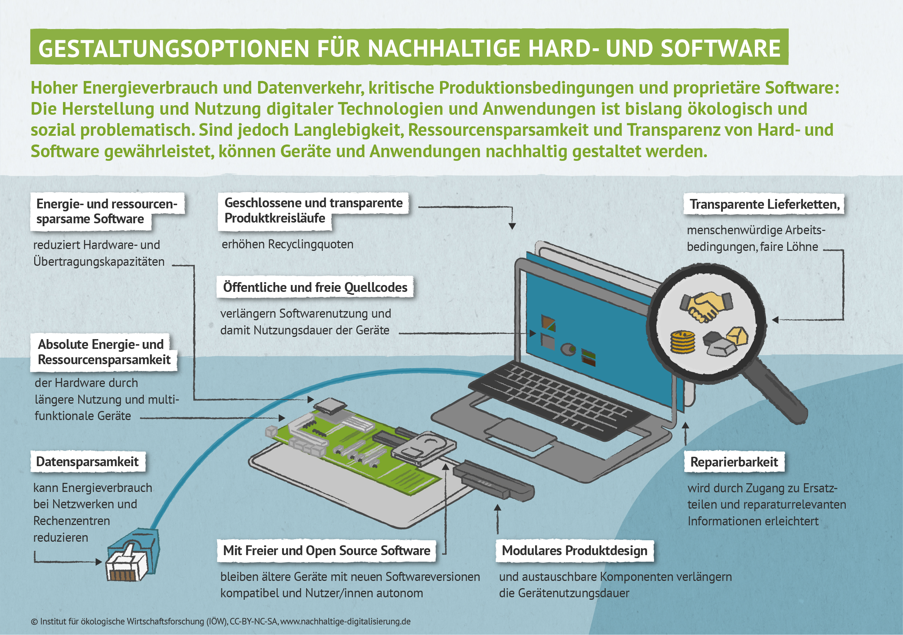

Überblick › LB 1 Technische Informatik
5.2 Hardware-Lebenszyklus
Nimm dein Smartphone in die Hand. Es wiegt etwa 200 Gramm. Für seine Herstellung wurden aber rund 70 Kilogramm Rohstoffe bewegt, Wasser in Badewannenmengen verbraucht und mehr CO₂ ausgestoßen, als du in den nächsten Jahren durch das Aufladen verursachen wirst. Und nach durchschnittlich zweieinhalb bis drei Jahren landet es in einer Schublade, obwohl Prozessor und Speicher noch einwandfrei funktionieren.
Der Hardware-Lebenszyklus beschreibt den gesamten Weg eines Geräts: Rohstoffgewinnung, Fertigung, Transport, Nutzung, Reparatur, Weitergabe und am Ende Recycling oder Entsorgung. Auf dieser Seite folgen wir diesem Weg einmal komplett. Dabei wirst du merken, dass du an mehreren Stellen selbst entscheidest, wie lang oder kurz dieser Weg ist.
Station 1: Die Rohstoffe
In einem Smartphone stecken über 60 verschiedene chemische Elemente. Kupfer und Gold für Leiterbahnen und Kontakte, Kobalt und Lithium für den Akku, Tantal für Kondensatoren, Indium für den Touchscreen, Neodym für die Lautsprechermagnete, dazu Silizium für die Chips. Viele davon stammen aus wenigen Ländern: Ein Großteil des Kobalts kommt aus der Demokratischen Republik Kongo, oft aus Minen mit Kinderarbeit und ohne Arbeitsschutz. Seltene Erden werden zu über zwei Dritteln in China gefördert. Wer Hardware baut, ist also von globalen Lieferketten abhängig, und wer Hardware kauft, auch.
Die gute Nachricht: In einer Tonne alter Handys steckt deutlich mehr Gold als in einer Tonne Golderz. Elektroschrott ist ein Rohstofflager, wenn man ihn einsammelt.
Station 2: Die Fertigung eines Mikrochips
Die Fertigung eines Mikrochips beginnt mit einer dünnen Scheibe aus hochreinem Silizium (dem „Wafer“). Darauf werden in einem Reinraum mit Fotolithografie und Ätzverfahren Schicht für Schicht Milliarden von Transistoren erzeugt. Aus diesen Transistoren entstehen genau die Gatter (UND, ODER, NICHT), aus denen du in Kapitel 3 Halb- und Volladdierer gebaut hast, und aus diesen wiederum das Rechenwerk aus Kapitel 4.
Diese Fertigung ist extrem anspruchsvoll und ressourcenintensiv:
- Reinheit: Die Strukturen auf einem modernen Chip sind nur wenige Nanometer groß. Ein einzelnes Staubkorn ist dagegen ein Felsbrocken und kann eine ganze Charge unbrauchbar machen. Chipfabriken gehören deshalb zu den saubersten Räumen der Welt (siehe ingenieur.de: „Wie arbeitet ein Reinraum in der Chipfertigung?“).
- Wasser und Energie: Große Chipfabriken verbrauchen täglich so viel Reinstwasser wie eine Kleinstadt und benötigen enorme Mengen Strom (siehe greenspotting.de: „Dreckige Chips“). In Taiwan, wo ein Großteil der modernsten Chips entsteht, konkurrierten Chipfabriken in Dürrejahren bereits mit der Landwirtschaft um Wasser.
- Chemikalien: Für Ätz- und Reinigungsschritte werden zum Teil hochgiftige oder extrem langlebige Chemikalien eingesetzt.
- Konzentration: Die modernsten Chips der Welt werden fast ausschließlich von einem einzigen Unternehmen in Taiwan gefertigt (TSMC). Deshalb investieren Europa und die USA Milliarden in eigene Fabriken. In Dresden, im „Silicon Saxony“, entstehen seit 2024 neue Chipwerke, unter anderem eine gemeinsame Fabrik von TSMC, Bosch, Infineon und NXP.
Hinweis: Warum deine KV-Diagramme Wasser sparen
Alles, was du in „Boolesche Algebra“ und „Schaltnetze“ auf dem Papier vereinfacht hast, wird am Ende genau hier real gefertigt. Je weniger Gatter eine Schaltung braucht (Normalformen, KV-Diagramme), desto weniger Transistoren, desto kleiner die Chipfläche, desto mehr Chips passen auf einen Wafer und desto weniger Energie verbraucht der Chip im Betrieb. Bei Milliarden produzierter Chips macht ein eingespartes Gatter einen messbaren Unterschied für Kosten und Umwelt. Chipdesign ist deshalb heute einer der bestbezahlten Berufe der Informatik.
Station 3: Die Nutzung und ihr vorzeitiges Ende
Ein Smartphone wird im Schnitt nur zweieinhalb bis drei Jahre genutzt, ein Laptop vier bis fünf Jahre. Technisch könnten beide deutlich länger halten. Warum werden sie trotzdem ersetzt? Man unterscheidet drei Arten von Obsoleszenz (Veralten):
| Art | Was passiert | Beispiel |
|---|---|---|
| Technische Obsoleszenz | Ein Bauteil verschleißt oder geht kaputt, und die Reparatur ist unmöglich oder unverhältnismäßig teuer. | Der fest verklebte Akku hält nur noch einen halben Tag. Das Display ist gesprungen, der Tausch kostet fast so viel wie ein neues Gerät. |
| Funktionale Obsoleszenz | Die Hardware funktioniert, aber die Software zieht sich zurück: keine Updates mehr, neue Apps laufen nicht, Sicherheitslücken bleiben offen. | Android-Geräte bekommen oft nur zwei bis drei Jahre Updates. Windows 10 verlor im Oktober 2025 den Support, Windows 11 läuft auf vielen älteren PCs nicht (siehe Seite 5.1). |
| Psychologische Obsoleszenz | Das Gerät funktioniert, wirkt aber alt. Werbung, neue Modelle und Vertragsverlängerungen mit „Gratis-Handy“ erzeugen den Wunsch nach etwas Neuem. | Jährliche neue Modellreihen, Mobilfunkverträge mit Gerätetausch alle 24 Monate. |
Was die EU dagegen tut
- Recht auf Reparatur: Die EU-Richtlinie „Right to Repair“ (EU 2024/1799) verpflichtet Hersteller unter anderem von Smartphones, Tablets und Haushaltsgeräten, Reparaturen zu angemessenen Preisen und in angemessener Zeit anzubieten, auch nach Ablauf der Garantie, und Ersatzteile bereitzuhalten.
- Einheitlicher Ladeanschluss: Seit Ende 2024 müssen neue Smartphones, Tablets und Kameras in der EU über USB-C laden. Das spart Ladegeräte und Elektroschrott.
- Energielabel mit Reparierbarkeitsindex: Seit Juni 2025 tragen neue Smartphones und Tablets in der EU ein Energielabel, das neben der Energieeffizienzklasse und der Akkulaufzeit auch eine Reparierbarkeitsklasse von A bis E, die Sturzfestigkeit, die Zahl der Ladezyklen und den Schutz gegen Staub und Wasser angibt. Die zugehörige Ökodesign-Verordnung verpflichtet die Hersteller außerdem, noch mindestens fünf Jahre nach dem Verkaufsende eines Modells Betriebssystem-Updates bereitzustellen.
- Austauschbare Akkus: Ab 2027 müssen Akkus in neuen tragbaren Geräten von den Nutzenden selbst mit handelsüblichem Werkzeug austauschbar sein (EU-Batterieverordnung).
Ein bekanntes Vorreiter-Beispiel ist der niederländische Hersteller Fairphone, dessen Smartphones so konstruiert sind, dass Akku, Display und Kamera mit einem Schraubendreher gewechselt werden können, und der acht Jahre Updates verspricht. Wie reparierbar dein eigenes Gerät ist, verrät der Reparierbarkeits-Score von iFixit.
Station 4: Das Ende. Schublade, Müll oder Rohstofflager?
Am Ende des Lebenszyklus steht die Entsorgung, und hier wird Hardware zu einem der am schnellsten wachsenden Abfallprobleme der Welt. Laut dem Global E-Waste Monitor 2024 der Vereinten Nationen fielen 2022 weltweit rund 62 Millionen Tonnen Elektroschrott an, im Schnitt 7,8 kg pro Person. Nur etwa 22 % davon wurden nachweislich fachgerecht recycelt. Bis 2030 wird ein Anstieg auf rund 82 Millionen Tonnen pro Jahr erwartet, weil die Menge fünfmal schneller wächst als das dokumentierte Recycling.
Ein großer Teil des nicht recycelten Elektroschrotts wird illegal in Länder wie Ghana oder Nigeria exportiert, wo er auf offenen Deponien wie Agbogbloshie bei Accra von Hand zerlegt und verbrannt wird, um an Kupfer und Aluminium zu kommen. Die Schadstoffe landen in Boden, Wasser und Lunge der Arbeitenden, oft Kinder.
Der andere Teil verschwindet einfach: Der Branchenverband Bitkom schätzt, dass in deutschen Haushalten über 200 Millionen ausgediente Handys in Schubladen liegen. Jedes davon enthält Gold, Kupfer, Kobalt und seltene Erden, die neu abgebaut werden müssen, solange die Geräte dort liegen.
Vor der Weitergabe: Daten wirklich löschen
Wer ein Gerät verschenkt, verkauft oder abgibt, sollte es vorher zurücksetzen. Aus Seite 5.1 weißt du, dass „Löschen“ im Dateisystem oft nur den Eintrag im Inhaltsverzeichnis entfernt, die Daten bleiben auf dem Speicher. Bei Smartphones ist der Speicher heute standardmäßig verschlüsselt, und „Auf Werkseinstellungen zurücksetzen“ verwirft den Schlüssel, damit sind die Daten unlesbar. Bei alten Laptops mit unverschlüsselter Festplatte reicht das nicht: Hier muss der Datenträger mit einem Löschprogramm überschrieben werden. Datenschutz ist also ein Grund, warum viele Geräte in der Schublade bleiben, obwohl es dafür eine einfache Lösung gibt.
Was nachhaltige Hard- und Software ausmacht
Die folgende Infografik des Instituts für ökologische Wirtschaftsforschung fasst zusammen, an welchen Stellschrauben Hersteller, Softwareentwickler und Nutzende drehen können. Beachte, wie viele davon Software betreffen: Ein schlankes Programm, offener Quellcode und lange Update-Versorgung halten Hardware länger nutzbar.

Rechnen mit dem CO₂-Fußabdruck
Ob sich Weiternutzen, Reparieren oder Neukaufen lohnt, lässt sich mit einer einfachen Bilanz abschätzen: einmalige Emissionen der Herstellung plus jährliche Emissionen durch den Strom in der Nutzung. Die Zahlen in den Beispielen sind gerundete Annahmen in der Größenordnung von Herstellerangaben.
Praxisbezug: Nachhaltige IT als Berufsfeld
Alltag: Ob du dein Smartphone reparieren lässt, ein gebrauchtes Gerät kaufst oder das alte Handy aus der Schublade zum Recyclinghof bringst – jede dieser Entscheidungen verlängert oder verkürzt den Lebenszyklus.
Berufsleben:
- Chipdesigner/in und Prozessingenieur/in: Je weniger Gatter eine Schaltung braucht, desto weniger Chipfläche, Reinstwasser und Energie kostet ihre Fertigung – ein Arbeitsfeld mit Tausenden Stellen in den Dresdner Halbleiterwerken („Silicon Saxony“).
- Refurbishing-Techniker/in: bereitet gebrauchte Laptops und Smartphones auf, löscht Daten zertifiziert und bringt die Geräte in einen zweiten Lebenszyklus.
- Nachhaltigkeitsmanager/in bzw. Green-IT-Berater/in: berechnet den CO₂-Fußabdruck der IT eines Unternehmens und plant längere Nutzungszeiten und Rücknahmeprogramme.
Das Wichtigste
Phasen des Hardware-Lebenszyklus:
- Planung und Design: Hier wird entschieden, ob ein Gerät reparierbar, aufrüstbar und lange mit Updates versorgt wird.
- Rohstoffgewinnung: Metalle, seltene Erden, Silizium, oft unter problematischen Bedingungen.
- Fertigung: Chips, Displays, Akkus, Zusammenbau.
- Transport und Verkauf
- Nutzung und Wartung: Strom, Updates, Reparaturen.
- Ende der Nutzung: Weitergabe, Wiederverwendung, Recycling oder Elektroschrott.
Ökologischer Fußabdruck: Jede Phase kostet Energie, Rohstoffe und Geld. Bei Smartphones und Laptops entfällt der Großteil des Fußabdrucks auf die Herstellung, nicht auf die Nutzung.
Grundaufgaben
Aufgabe 5.2.1: Steckbrief deines Geräts AFB I
Erstelle einen Steckbrief für dein eigenes Smartphone (oder ein anderes Gerät, das du regelmäßig nutzt). Recherchiere dazu:
- Wie alt ist das Gerät, und wie lange möchtest du es voraussichtlich noch nutzen?
- Bis wann bekommt es laut Hersteller Betriebssystem- und Sicherheitsupdates? (Suchbegriff: Modellname + „Update-Garantie“ oder „end of support“)
- Ist der Akku ohne Spezialwerkzeug wechselbar? Was kostet ein Akkutausch beim Hersteller, was in einer unabhängigen Werkstatt?
- Welchen Reparierbarkeits-Score hat das Gerät bei iFixit oder auf dem EU-Energielabel?
- Was würde dich am ehesten dazu bringen, es zu ersetzen? Ordne diesen Grund einer der drei Obsoleszenz-Arten zu.
Tragt die Nutzungsdauern der ganzen Klasse zusammen und berechnet den Durchschnitt. Vergleicht ihn mit der durchschnittlichen Nutzungsdauer von Smartphones in Deutschland (recherchiert eine aktuelle Zahl mit Quelle). Diskutiert, woran es liegt, wenn eure Zahl abweicht.
Aufgabe 5.2.2: Rechnen mit dem Fußabdruck AFB II
Für die Rechnung nutzen wir gerundete Werte, die sich an Umweltberichten großer Hersteller orientieren:
| Gerät | Herstellung und Transport (einmalig) | Stromverbrauch in der Nutzung (pro Jahr) |
|---|---|---|
| Smartphone | 60 kg CO₂ | 5 kg CO₂ |
| Laptop | 250 kg CO₂ | 20 kg CO₂ |
- Welcher Anteil der Gesamtemissionen eines Smartphones entfällt bei drei Jahren Nutzung auf die Herstellung? Was folgt daraus für die Frage, wo man am wirksamsten sparen kann?
- Person A kauft alle zwei Jahre ein neues Smartphone, Person B alle vier Jahre. Berechne die CO₂-Bilanz beider Personen über acht Jahre und vergleiche.
- Ein neuer Laptop verbraucht 30 % weniger Strom als der alte (also 14 statt 20 kg CO₂ pro Jahr). Der Hersteller wirbt: „Umweltfreundlich, jetzt wechseln!“ Berechne, wie viele Jahre man den neuen Laptop nutzen müsste, bis die Stromersparnis die Emissionen seiner Herstellung ausgeglichen hat. Beurteile die Werbung.
- Eine Schule mit 900 Schülerinnen und Schülern überlegt, alle Smartphones der Schülerschaft pauschal ein Jahr länger zu nutzen (von drei auf vier Jahre). Schätze, wie viel CO₂ das pro Jahr spart. Vergleiche mit einem Flug von Berlin nach Mallorca und zurück, der pro Person etwa 500 kg CO₂ verursacht.
Das kann ich jetzt
Grau steht, was der Lehrplan verlangt, darunter, was das für dieses Thema konkret heißt. Hake einen Punkt ab, wenn er in deinem Hefter zusammengefasst ist und du ihn ohne Hilfe kannst. Wie du ihn zusammenfasst, entscheidest du selbst. Die Haken speichert nur dein Browser.
Lehrplan LB 1 Einblick gewinnen in die Herstellung von Mikrochips
Lehrplan LB 1 Einblick gewinnen in die nachhaltige Nutzung von Hardware